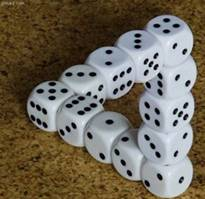

Problem G
A Dicey Dice
Input: Standard Input
Output: Standard Output
A dice can become dicey when all its sides don’t have equal probability of appearing on the top. A conventional dice has the shape of a perfect cube and has six faces. This six faces have 1, 2, 3, 4, 5 and 6 written on them (Exactly one of these values of course). So for a conventional dice the probability of each side appearing on the top is . Now the dicey dice we will be considering in this problem has different probabilities for the appearance on top for each side. To be specific the probability of appearance of the sides 1, 2, 3, 4, 5, 6 on the top of a dice with six faced is , , , , and respectively (Probability proportional to their values). When N such a dice with K faces are thrown, the probability that the summation of the numbers on the top is S can be expressed as a fraction. Your job is to find the modulo 100000007 value of v for a given value of N, K and S.
Input
The input file contains at most 70 sets of inputs. The description of each set is given below:
Each set is contained in a single line. This line contains three non-negative integers N (0<N<1001), K(0<K<1001) and S(S<15001). The meaning of N, K and S are given in the problem statement.
Input is terminated by a line containing two zeroes. This line should not be processed.
For each line of input produce one line of output. This line contains an integer which is the modulo 100000007 value of v. The meaning of v is given in the problem statement.
|
1 6 3 2 100 10 2 9 8 500 6 1000 800 800 10000 0 0 |
3 165 84 74335590 33274428 |
Problemsetter: Shahriar Manzoor
Special
Thanks: Derek Kisman
The dice picture is collected from http://www.joe-ks.com/archives_may2007/EscherDice.htm